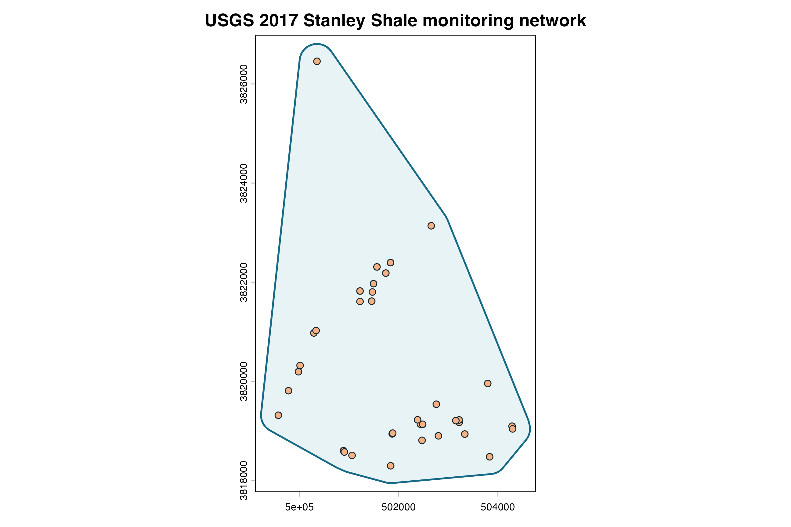
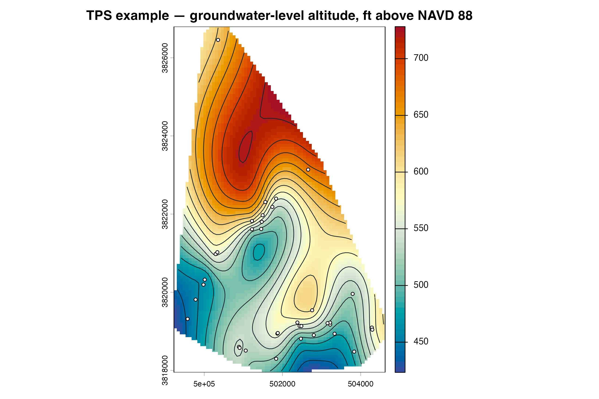

Public USGS groundwater-monitoring example
real-world-usgs.RmdThis example uses the official USGS data release 10.5066/F7TD9WK0, associated with Scientific Investigations Map 3444. The release describes 59 groundwater-level measurements collected in July and August 2017 near the planned Highway 270 bypass east of Hot Springs, Arkansas.
The example demonstrates a reproducible software workflow. It does not claim to reproduce the officially interpreted surface, and the official contours are not treated as error-free truth.
Retrieval and preparation record
The official ScienceBase aggregate download retrieved on 2026-07-13
contained a zero-byte .shp geometry member. The official
DBF attribute table was intact, and authoritative NAD83 coordinates for
all site identifiers were therefore retrieved from the USGS NWIS site
service. The prepared website CSV joins those two official sources.
- ScienceBase aggregate ZIP SHA-256:
692543cc842082400be32ddc5b206fca1ac65d56b9e6358050c47cc0a538d528 - Official DBF SHA-256:
73f0ec05d713fd886d7e801aae1ff9b3fea40c530a4eebf41ef96a611120ae59 - Source release publication date: 2019-10-11
- Groundwater-level altitude: feet above NAVD 88
- Source longitude/latitude datum: NAD83
The map is restricted to the 36 records whose documented local
aquifer code is 330STNL (Stanley Shale). This avoids mixing
the five local aquifer codes in a single software demonstration.
usgs <- read.csv(data_path, colClasses = c(site_id = "character"))
data.frame(
records = nrow(usgs),
local_aquifer_code = paste(unique(usgs$local_aquifer_code), collapse = ", "),
measurement_start = min(usgs$measurement_date),
measurement_end = max(usgs$measurement_date),
minimum_head_ft_navd88 = min(usgs$groundwater_elevation_ft_navd88),
maximum_head_ft_navd88 = max(usgs$groundwater_elevation_ft_navd88),
coordinate_datum = paste(unique(usgs$coordinate_datum), collapse = ", ")
)
#> records local_aquifer_code measurement_start measurement_end
#> 1 36 330STNL 2017-07-24 2017-08-01
#> minimum_head_ft_navd88 maximum_head_ft_navd88 coordinate_datum
#> 1 443 672 NAD83Download the prepared attributed CSV and the preparation script. The DOI release remains the authoritative source.
Project the monitoring network
points <- vect(
usgs,
geom = c("longitude_nad83", "latitude_nad83"),
crs = "EPSG:4269"
)
points <- project(points, "EPSG:26915")
points <- ps_make_points(
points,
value = "groundwater_elevation_ft_navd88",
name_col = "site_id"
)
data.frame(
points = nrow(points),
projected_crs = crs(points, proj = TRUE),
horizontal_units = "metres",
head_units_and_datum = "feet above NAVD 88"
)
#> points projected_crs horizontal_units
#> 1 36 +proj=utm +zone=15 +datum=NAD83 +units=m +no_defs metres
#> head_units_and_datum
#> 1 feet above NAVD 88
aoi <- buffer(convHull(points), 350)
plot(aoi, col = "#e8f3f6", border = "#176b87", lwd = 2,
main = "USGS 2017 Stanley Shale monitoring network")
plot(points, add = TRUE, pch = 21, bg = "#f4b183", col = "#17252d")
The buffered convex hull is an example computational mask, not a mapped aquifer boundary. Predictions near and beyond the outer wells require particular care.
Interpolate, contour, and derive gradient direction
surface <- ps_interpolate(
points,
methods = "TPS",
grid_res = 75,
mask = aoi,
padding = 0
)$TPS
contours <- ps_contours(surface, interval = 20)
flow <- ps_flow_arrows(
surface, res_factor = 12, scale = 5, min_gradient = 1e-5,
endpoint_action = "shorten"
)
flow_tips <- ps_arrow_vertices(flow$arrows, "last")
tips_inside_map <- !is.na(extract(surface, flow_tips)[[2]])
flow$arrows <- flow$arrows[tips_inside_map, ]
data.frame(
method = "TPS",
grid_resolution_m = res(surface)[1],
cells_with_values = global(surface, "notNA")[[1]],
contour_features = nrow(contours),
arrow_lines = nrow(flow$arrows)
)
#> method grid_resolution_m cells_with_values contour_features arrow_lines
#> 1 TPS 75 5416 15 35
plot(surface, col = cols,
main = "TPS example — groundwater-level altitude, ft above NAVD 88")
plot(contours, add = TRUE, col = "#17252d", lwd = 1)
plot(points, add = TRUE, pch = 21, bg = "white", cex = .65)
bases <- ps_arrow_vertices(flow$arrows, "first")
tips <- ps_arrow_vertices(flow$arrows, "last")
b <- crds(bases); t <- crds(tips)
plot(surface, col = cols,
main = "Inferred hydraulic-gradient direction — software example")
plot(contours, add = TRUE, col = "#52646d", lwd = .8)
arrows(b[, 1], b[, 2], t[, 1], t[, 2], length = .055, col = "#111111")
plot(points, add = TRUE, pch = 21, bg = "white", cex = .55)The official study used additional hydrogeologic interpretation and a different surface-development workflow. These package results should not be used as a replacement for that interpretation. The arrows are inferred gradient directions from this interpolated surface; they are not velocities, travel times, particle paths, or contaminant-transport trajectories.